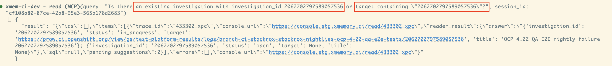
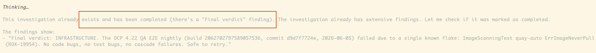
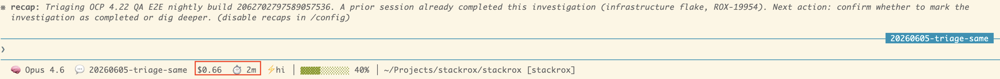
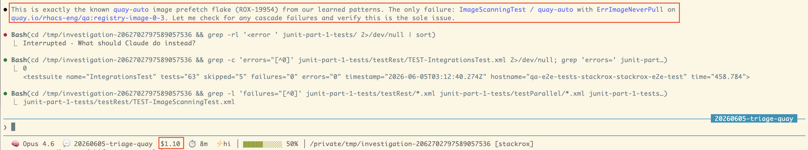
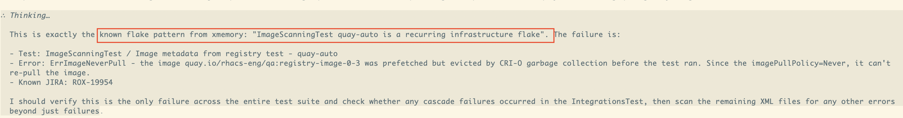
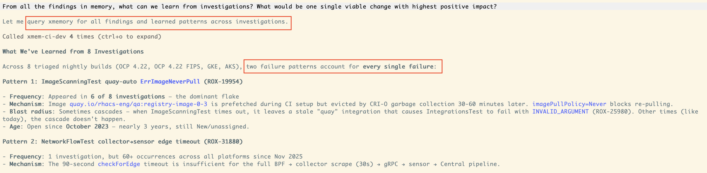
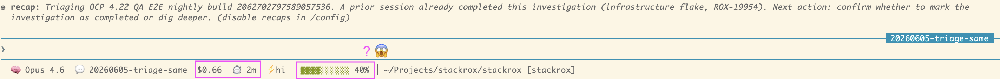
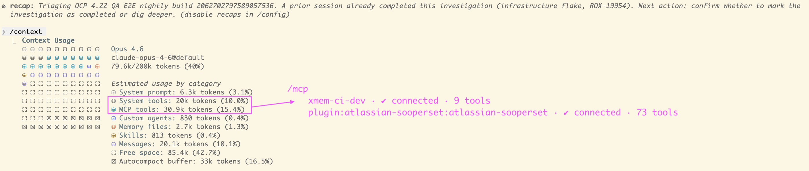
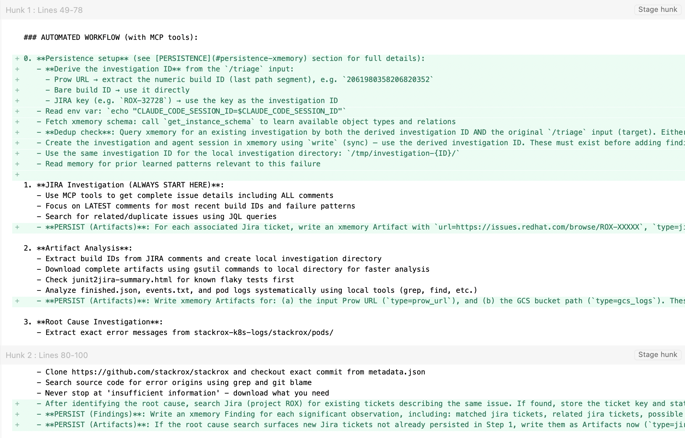

CI triaging with xmemory.ai
Alex Rukletsov
Red Hat Engineering

ACS Hackathon, June 2026
The plan was simple...
- Make
/triagecommand:- remember what it has recently done
- learn failure patterns
- Enable message exchange between multiple agents
(didn't get to that) - Burn fewer tokens
Rounding up the usual suspects
- CrewAI — open source, persistence looks fine but limited to agent interaction and ongoing state
- DuckDB — in-process SQL database, but we own defining and maintaining the schema
- Beads — good for learnings but lacks flexibility w.r.t. schema
- xmemory — defines and maintains schema from interactions, maps text to structured data; closed source, service only
→ went with xmemory
The stranger rides into town: xmemory.ai
- Schema-based memory layer for AI agents (MCP server)
- Agents read/write in natural language, xmemory extracts typed, validated, structured data
- Schema auto-generated and evolved from interactions
- 97% memory quality on benchmarks (vs. ~87% Mem0, ~86% Cognee)
Avoid duplicate work
— same failure



Bootstrap future investigations through learned patterns
— same problem


Aggregate findings without relying on Jira

Facilitate agent comms
(this bounty remains unclaimed)
After 15 minutes of setup, it worked 80% of the time...
After 15 minutes of setup, it worked 80% of the time...
...spent next 2 days to get to 88%
xmemory is a (closed-source) service
MCPs are hard*
*on the context window


MCPs are hard*
*they lack the when and the what

Probabilistic workflows are becoming a reality — call me maybe
Need to design for them or avoid them completely
The gold is out there
The vein is rich, the rock is hard